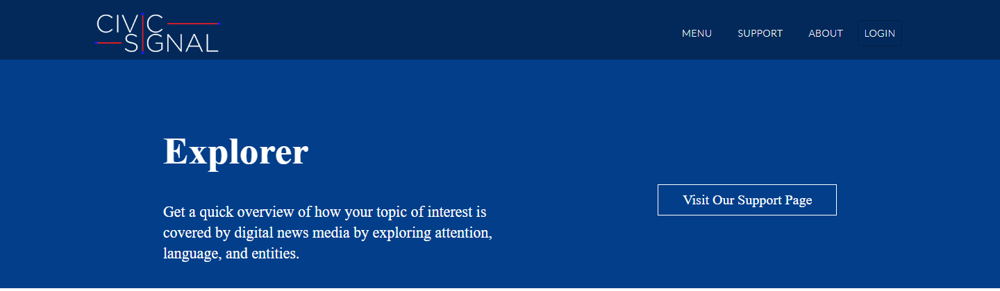
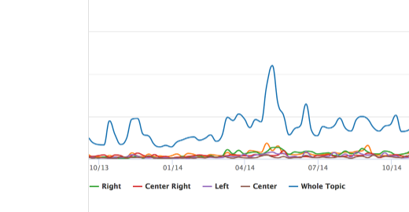
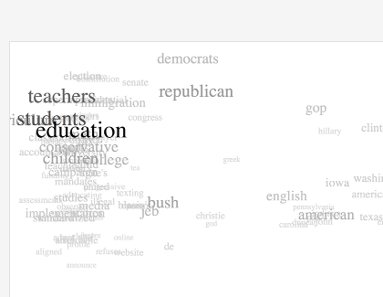
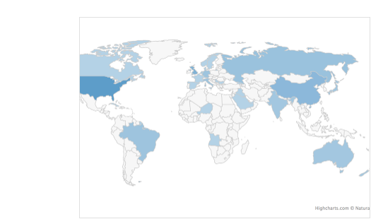
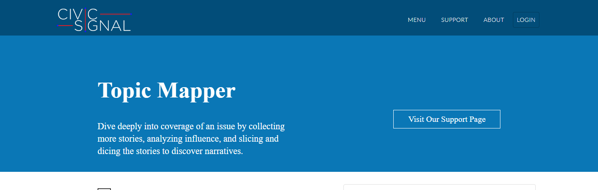
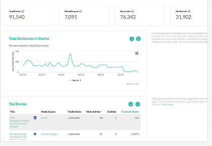
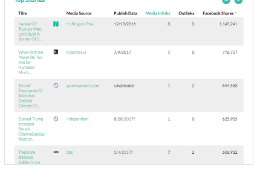
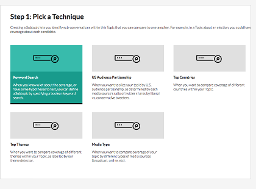

MediaCloud is the ingestion and analysis layer underneath CivicSignal — the discovery pipeline that pulls articles from thousands of African digital sources, and the research tools (Explorer and Topic Mapper) that turn that archive into evidence: attention over time, competing narratives, and networks of influence.
Built on Media Cloud, the open-source platform originally developed at Harvard's Berkman Klein Center and incubated at the MIT Media Lab — the same academic infrastructure used by newsroom and academic researchers worldwide, run here as CivicSignal's own instance for Africa.
MediaCloud runs the discovery-and-extraction cascade — RSS, sitemap, homepage fallback — that pulls articles from thousands of sources into a shared archive. On top of that archive sit two research tools built for exactly this kind of investigation: Explorer, for a fast first read on how an issue is covered, and Topic Mapper, for going deep on one story until the network of who's citing whom becomes visible.
Thousands of digital sources monitored across dozens of countries, organised into curated collections, added to daily rather than pulled in one-off snapshots.
Search and analysis support across CivicSignal's three most-covered languages, with more African-language coverage growing as the archive does.
Every other CivicSignal tool — Wavelength, Fingerprints, Major Events — reads from what MediaCloud collects. It's the foundation layer, not a separate product.
Use Explorer to search half a billion stories from more than 50,000 sources including online news and blogs — individually or as curated collections of Africa's top media sources — and get a quick overview of attention, language, and the entities involved.

See how much an issue is covered, week by week. Spikes reveal the events that drove a conversation; plateaus reveal the "normal" baseline of attention to measure everything else against. Every chart and its underlying aggregated data is downloadable.

Real CivicSignal MediaCloud Explorer output — explorer.civicsignal.africaWhich words do outlets actually use to describe an issue? Word clouds, word counts, bi-grams, word trees and word embeddings surface the differing narratives at a glance — before anyone has to read a single article.

Real CivicSignal MediaCloud Explorer output — explorer.civicsignal.africaEvery story is geocoded to the countries and places it's actually about. That makes it possible to see exactly where an issue is being covered most — and just as usefully, to spot the "issue deserts" where it isn't being talked about at all.

Real CivicSignal MediaCloud Explorer output — explorer.civicsignal.africaOnce Explorer has narrowed a query down to the sources and time period worth investigating, Topic Mapper turns that starting point into a proper research corpus — collecting more stories, measuring influence, and slicing the results into comparable subtopics.

A Topic starts seeded with stories already in the archive. From there, a web crawler follows the links inside those stories to find more matching coverage — a process called spidering, repeated 15 times to build out a bigger corpus, with rigorous de-duplication of stories that appear at more than one URL.

Real CivicSignal MediaCloud Topic Mapper output — topics.civicsignal.africaEvery story in a Topic is processed for inlinks and outlinks, so citation and cross-linking between sources becomes measurable — alongside Facebook share counts per story, as a second, independent read on influence. Full network maps are downloadable for further analysis in tools like Gephi.

Real CivicSignal MediaCloud Topic Mapper output — topics.civicsignal.africaSplit a Topic into subtopics for real comparative analysis — automatically by week or month for time-based or key-event analysis, or by a growing list of techniques: boolean keyword queries, country of focus, audience partnership, dominant themes, or media type.

Real CivicSignal MediaCloud Topic Mapper output — topics.civicsignal.africaWavelength's streamgraph, Fingerprints' publisher profiles, Major Events' clustering — none of it exists without MediaCloud's ingestion running underneath. It's the least visible part of CivicSignal, and the part that makes everything visible possible.
Tool descriptions and screenshots drawn directly from CivicSignal's own MediaCloud deployment — explorer.civicsignal.africa and topics.civicsignal.africa — plus mediacloud.org's description of the underlying open-source platform. Live stats (stories archived, collections, daily crawl volume) captured at time of writing and not auto-refreshed on this page.